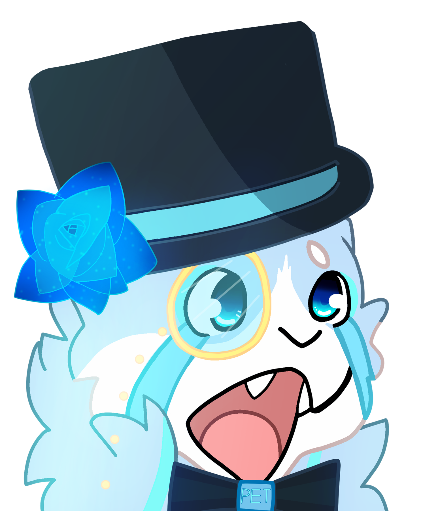

01 / THE INTRO
Welcome To My Channel!!
A quick introduction to the cat behind the chaos.
A little corner of the night sky

Gaming adventures under the stars.
I’m SirAsterTheCat—a furry gaming creator sharing playthroughs, ridiculous moments, and good company. Pull up a chair and stay a while.
SirAsterTheCat You can call me Aster.
Choose your first adventure
Choose a cartridge to load a video or playlist. Watch it slide into the N64 before YouTube opens in a new tab.
01 / THE INTRO
A quick introduction to the cat behind the chaos.
02 / WITH FRIENDS
A highlight reel of the laughs, luck, and questionable decisions.
03 / CURRENT SERIES
Follow the latest game playlist, refreshed from the channel's own list.
Looking for another game? The whole collection is waiting.
Browse all 54+ playlistsCome hang out live
Stream updates
The official Twitch player updates this status when stream events are available.
Watch or follow on TwitchStream status is reported by the Twitch player while this page is open. Mobile playback may require a tap.
From the channel
The latest full episodes and longer adventures, newest first.
Quick moments
The newest short clips from the channel.
Choose your path
The person behind the cat
Hey there! I'm Aster, the person behind SirAsterTheCat!
For as long as I can remember, I've wanted to be an entertainer. I've always loved the idea of making people laugh, sharing experiences, and putting on a good show. There was just one problem: I've never been particularly comfortable being myself in front of a crowd.
For a long time, music was my way of performing. As a musician, I could pour myself into a performance without having to worry about presenting myself. The focus was on the music, and I loved that.
Streaming gave me a different kind of stage.
I've always loved video games, and streaming lets me turn that passion into something more. I get to improvise, make jokes, share adventures, and entertain people in a space where I feel comfortable expressing my personality. Sometimes things go wonderfully, sometimes everything falls apart, and sometimes the funniest moments are the ones nobody could have planned.
I'm also endlessly curious, especially when it comes to retro games, music, technology, and understanding how things work. I love exploring new ideas almost as much as I love sharing them.
But more than anything, I love making friends. Getting to know people, laughing together, and creating memories are what make all of this worthwhile.
After all, video games might be my stage, but the people I share them with are what make the show special.
Thanks for being part of it!